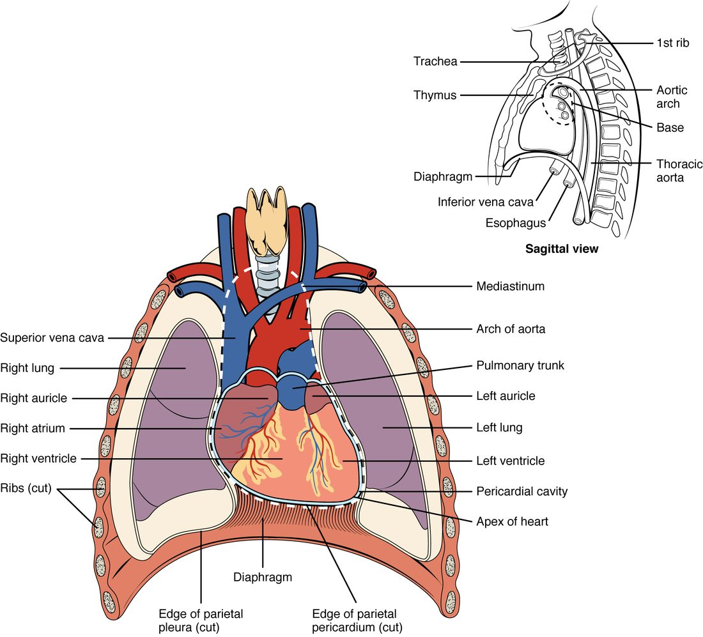
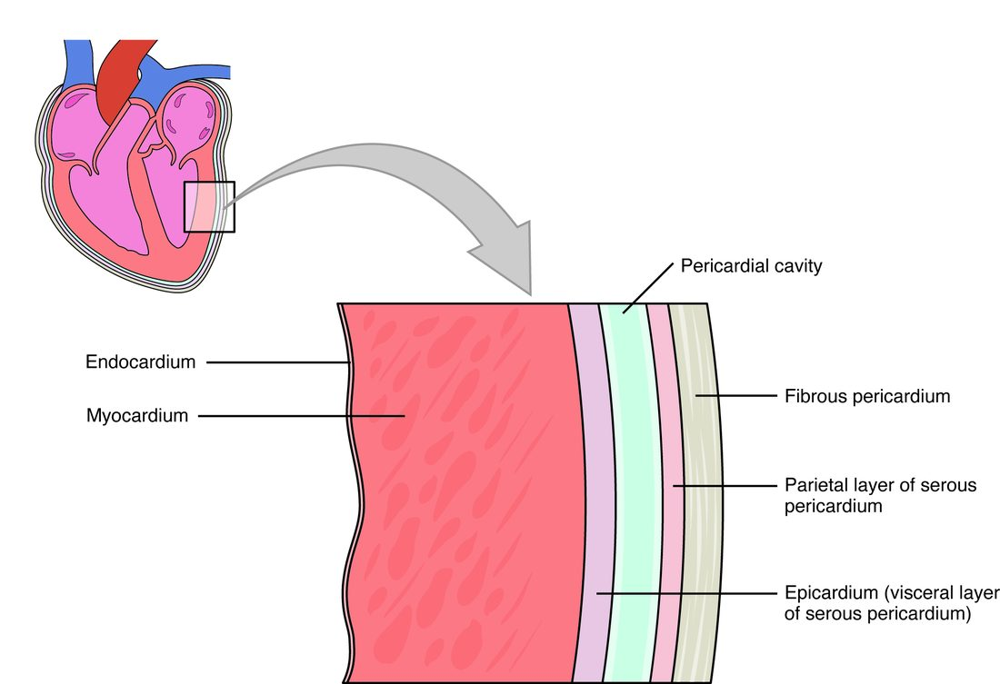

Heart anatomy starts with four questions: where your heart sits in the chest, what wraps around it, what its wall is made of, and how it is divided inside. This page covers the heart's location, the layers of the pericardium, the three layers of the heart wall, the four chambers and the great vessels that attach to them. It ends with cardiac tamponade, an emergency that only makes sense once you know those layers.
Where your heart sits
Press your fingers into the space between your ribs just below your left nipple, and you may feel a tap with each beat. That tap is the tip of your heart hitting the inside of your chest wall. It tells you two things right away: your heart is closer to the front of your chest than the back, and it points to the left.
Your heart is a hollow muscular organ about the size of your closed fist. In an adult it weighs roughly 250 to 350 grams. It sits in the mediastinum, the central compartment of the thoracic cavity between the two pleural cavities (Figure 1). That puts it:
- between your two lungs, on either side;
- posterior to your sternum, in front;
- anterior to your esophagus and vertebral column, behind;
- on the dome of your diaphragm, below.
The heart does not sit straight. It is tilted so that about two thirds of its mass lies to the left of the body's midline. It is also turned slightly, so its right side faces more toward the front.

Apex and base
Your heart is shaped roughly like a blunt cone lying on its side. Its two ends have names that trip up many students, because they run opposite to what you might expect.
- The apex of the heart (apex = tip) is the pointed lower end. It points inferiorly, anteriorly and to the left. In most adults it lies at the fifth intercostal space (inter- = between, cost/o = rib), in line with the middle of the left clavicle. That is where you feel the tap.
- The base of the heart is the broad upper and back end. It faces superiorly, posteriorly and to the right, toward your right shoulder. The large blood vessels that carry blood into and out of the heart attach here.
So the base is at the top and the apex is at the bottom. Think of an ice cream cone held the usual way: the wide opening at the top is the base, and the point at the bottom is the apex.
The pericardium: a sac with two parts
Imagine pushing your fist into a partly inflated balloon. The balloon folds around your fist in two layers: one pressed against your skin, one facing outward, with a thin film of air between them. Now put that balloon inside a stiff paper bag. That is the plan of the pericardium.
The pericardium (peri- = around, cardi/o = heart) is the covering that surrounds your heart. It has two parts that are built very differently.
Fibrous pericardium
The fibrous pericardium is the tough outer bag, the paper bag in the picture. It is made of dense connective tissue, mostly thick collagen fibers running in many directions. It is anchored below to the diaphragm and above to the connective tissue around the large vessels at the base of the heart. Collagen resists being pulled, so this layer does two things. It holds your heart in place in the mediastinum. And it resists stretching, which limits how far the heart can expand. That last point matters for cardiac tamponade, later on this page.
Serous pericardium
The serous pericardium (ser/o = watery fluid) is the thin inner part, the balloon in the picture. It is a serous membrane: a single layer of simple squamous epithelium, called mesothelium, on a thin layer of connective tissue. Like the balloon, it forms two layers that are continuous with each other where the large vessels enter and leave at the base.
- The parietal pericardium (pariet- = wall) is the outer layer. It lines the inside of the fibrous pericardium and is fused to it.
- The visceral pericardium (viscer- = internal organ) is the inner layer. It sticks tightly to the surface of the heart itself.
The pericardial cavity
Between the parietal and visceral layers lies the pericardial cavity. It is not an open space. It holds only a thin film of serous fluid, usually about 15 to 50 mL. The mesothelium secretes this fluid. It lets the two layers slide over each other with little friction as your heart beats about 100,000 times a day.
The pericardial sac is the name for the fibrous pericardium together with the parietal layer fused to its inside. It is the part you would cut through to reach the heart in surgery. Figure 2 shows every layer in order.
| Fibrous pericardium | Serous pericardium | |
|---|---|---|
| Position | Outermost; the tough bag | Inside the fibrous layer; folded into two layers |
| Tissue | Dense connective tissue (collagen) | Mesothelium (simple squamous epithelium) on thin connective tissue |
| Layers | One | Two: parietal (outer) and visceral (inner) |
| Stretch | Resists stretch, especially sudden stretch | Thin and flexible |
| Main job | Anchors the heart and limits how far it can expand | Secretes serous fluid, so the layers slide with little friction |
The three layers of the heart wall
Now move inward, into the wall of the heart itself. It has three layers. From outside to inside they are the epicardium, the myocardium and the endocardium.

Epicardium
The epicardium (epi- = upon) is the outermost layer of the heart wall. It is the visceral pericardium under another name. The same sheet of tissue gets two names because it belongs to two structures: it is the inner layer of the serous pericardium, and it is the outer layer of the heart wall. Beneath its mesothelium lies connective tissue with fat. The heart's own surface blood vessels and nerves run through this fat.
Myocardium
The myocardium (my/o = muscle) is the middle layer and by far the thickest. It is cardiac muscle tissue: striated, branching muscle fibers joined end to end by intercalated discs. A network of collagen and elastic fibers holds the muscle together and carries its blood vessels. The muscle fibers wrap around the heart in spiral and figure-eight bundles. When they shorten, they squeeze and twist the heart, a bit like wringing out a towel. The myocardium is the layer that does the pumping.
Endocardium
The endocardium (endo- = within) is the innermost layer. It lines every space inside the heart and covers the flaps that control flow through it. It is endothelium, a simple squamous epithelium, on a thin layer of connective tissue. It is continuous with the endothelium lining your blood vessels, so blood touches one smooth, unbroken lining all the way around your body.
| Epicardium | Myocardium | Endocardium | |
|---|---|---|---|
| Position | Outer layer of the wall | Middle layer | Inner layer |
| Main tissue | Mesothelium on connective tissue and fat | Cardiac muscle tissue | Endothelium on thin connective tissue |
| Thickness | Thin | Thickest by far | Thin |
| Also called | Visceral pericardium | None | None |
| What it does | Covers the heart; carries surface vessels and nerves | Contracts and pumps blood | Gives blood a smooth lining to flow over |
Four chambers: two receiving, two pumping
Picture a house with two floors and a solid wall down the middle. Each side has an entry hall upstairs and a big room downstairs. Blood always comes in upstairs and leaves from downstairs. That is the layout of the four chambers of the heart, the hollow spaces inside it.
- An atrium (atri- = entrance hall; plural atria) is an upper, receiving chamber. Veins bring blood into it, and it passes that blood down to the ventricle below.
- A ventricle (ventricul- = little belly) is a lower, pumping chamber. It receives blood from the atrium above and pushes it out into a large artery.
So you have a right atrium above a right ventricle, and a left atrium above a left ventricle. "Right" and "left" are always the patient's right and left. When you look at a front-view drawing, the patient's right side is on your left.
In a healthy adult heart, blood on the right side never mixes with blood on the left side. Each side is a separate pump, and each works as a pair: atrium receives, ventricle pumps.
| Chamber | Receives blood from | Sends blood to |
|---|---|---|
| Right atrium | The body, through the superior and inferior venae cavae | The right ventricle, just below it |
| Right ventricle | The right atrium | The lungs, through the pulmonary trunk |
| Left atrium | The lungs, through the pulmonary veins | The left ventricle, just below it |
| Left ventricle | The left atrium | The rest of the body, through the aorta |
The chambers from outside
Look again at the heart in Figure 1. Because the heart is turned, the chambers you see from the front are not the ones you might expect.
- Most of the front surface is the right ventricle.
- The left ventricle forms the left edge of the heart and the apex.
- The right atrium forms the right edge.
- The left atrium lies at the back of the base, so a front view shows only its small pouch.
Each atrium has a wrinkled, ear-shaped pouch on its front called an auricle (auricul- = little ear). The right auricle sits beside the root of the aorta; the left auricle peeks out beside the pulmonary trunk. An auricle adds a little extra room to its atrium.
Don't mix these up. An auricle is only a pouch of an atrium, not a chamber of its own.
Grooves on the surface show where the chambers meet inside. Each groove is filled with fat and carries the heart's own surface blood vessels.
- The coronary sulcus (coron- = crown; sulcus = groove) runs all the way around the heart like a crown. It marks the boundary between the atria above and the ventricles below.
- The anterior interventricular sulcus runs down the front of the heart toward the apex. It marks where the wall between the two ventricles meets the surface.
- The posterior interventricular sulcus does the same on the back of the heart.
Mockup shows the first four sections. The real page continues with The chambers from inside, The great vessels, Cardiac tamponade: when the sac fills and Summary.